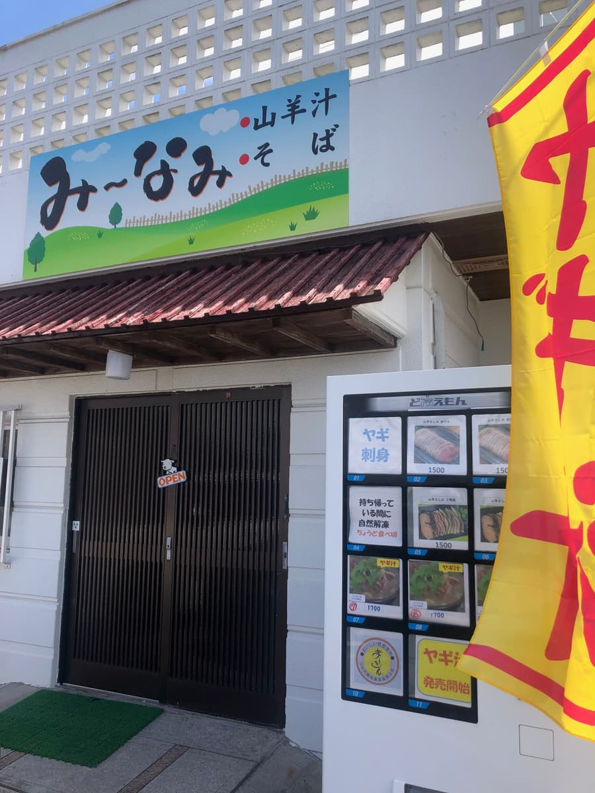
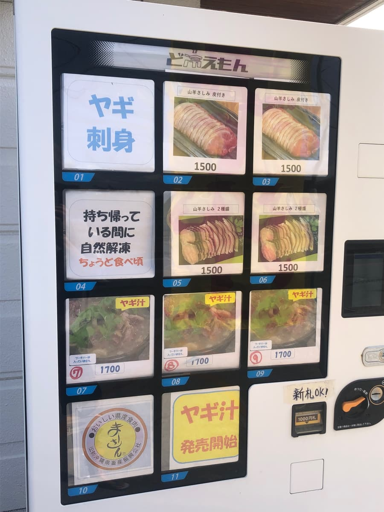
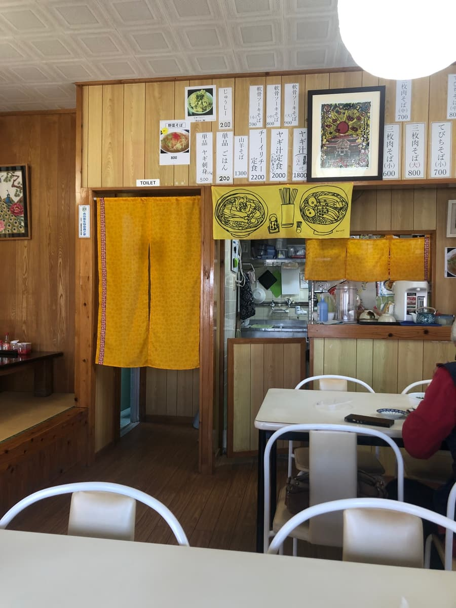
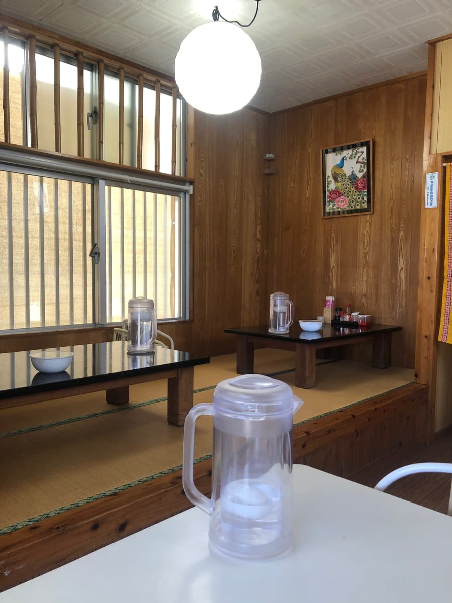
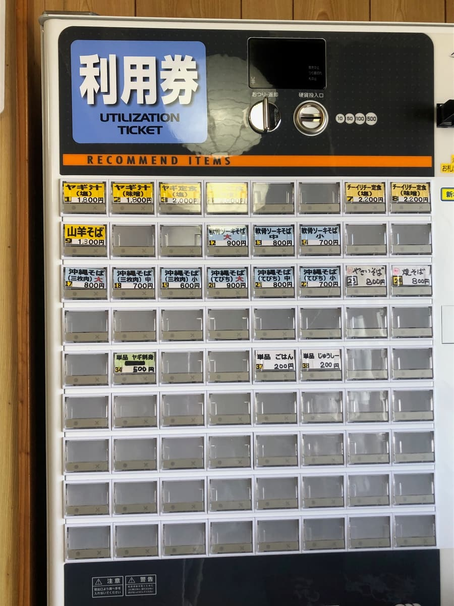
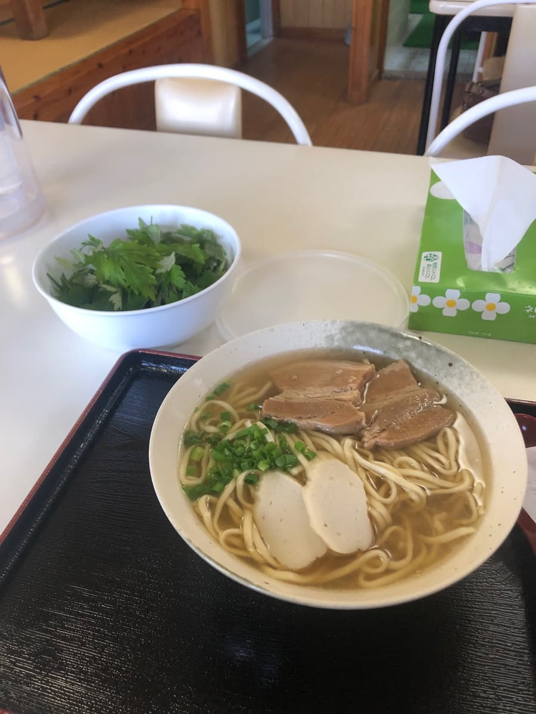
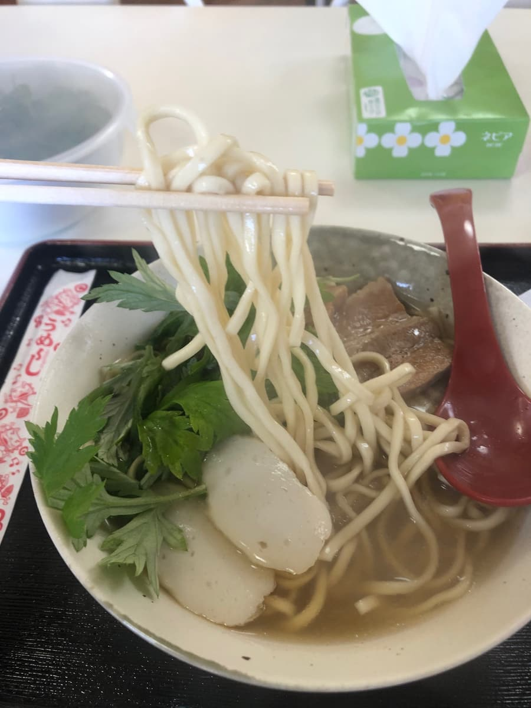

For this Okinawa soba outing, I went to “Mīnami” in Minami-Uehara, Nakagusuku Village 🌞 I ate here in March 2025 😄


The exterior has a bright sign like a blue sky, giving it a somewhat laid-back feel. At first glance it's simple and approachable, but when you look at the vending machine and banners beside the entrance, the presence of goat dishes such as goat soup and goat sashimi is quite strong, and you immediately think “oh, this shop pushes goat,” which makes a strong impression 🐐


Inside, the wood-grain walls give a calm atmosphere, with table seats and tatami seating, and it definitely has an old-fashioned diner feel 😊 I personally like this unpretentious feel quite a bit. It didn't feel designed for tourists, but like a place that is an extension of everyday life where local people just come to eat.

Looking at the menu boards, goat soba, goat soup set meal, soki soba, and more were lined up, showing this shop's character. Among them I chose the “Okinawa soba (braised pork belly), large” 👀

The Okinawa soba that arrived was quite classic just from looking at it. With a slightly clear broth, medium-thin straight noodles, braised pork belly (sanmai-niku), fish cake (kamaboko), and green onions, it has a comforting quality that makes you want to say “this is diner Okinawa soba” 🍥 Also, free fuchiba comes on a separate plate, which was a nice touch 🌿 A service like this is quietly appreciated. At first you eat it as is, and then you can change the flavor partway, so it's easy to eat without getting bored until the end.
First the broth. My impression after one sip was that it's probably a blended broth, but neither pork bone nor bonito pushed to the front. There was also a faint gentle sweetness, making it easy to drink ☺️ But for better or worse the individuality was faint, without an obvious punch like “the bonito is strong!” or “the pork-bone richness is strong!” It's not that the balance is off at all, but honestly, as for whether it's a broth that leaves a strong impression, it doesn't quite reach that.

The noodles were medium-thin straight noodles, finished on the soft side. The noodles themselves didn't have a strong presence, and neither in texture nor aroma did they make me think “these noodles are great.” Not bad, but my impression is that it's an overall mild bowl.
The braised pork belly was moderately well-seasoned, neither too strong nor too weak, and the balance there was not bad 🥢 It wasn't sweet-and-salty to the point of pushing itself forward, so it didn't spoil the broth's character. However, when I ate it, the sinewy texture was rather strong, and it wasn't the type that falls apart. It has a chew, but if it had a bit more fat tenderness and melt-in-the-mouth quality, the satisfaction would go up another notch. Including the fish cake and green onions, the toppings overall are quite basic, giving the impression of an old-fashioned bowl without gimmicks.
And when I added the fuchiba partway through, it made quite a nice accent 🌿✨ To a broth that was a little mild as is, the fuchiba's characteristic aroma and faint bitterness were added, and the flavor tightened up. Rather than putting it all in from the start, adding it a bit at a time as I watched was more enjoyable. Thanks to this free topping, I could eat without it getting too monotonous until the end. Honestly, where it would have ended with “it's ordinary” with the plain state alone, the fuchiba lifted it a little 😌
Rating (9/15): My overall impression settles at “this is really just ordinary Okinawa soba.” Of course that's not only in a bad sense; it means it has no odd quirks and is a standard bowl you can eat with confidence at a diner 🍜 But if you ask whether I'd go all the way from afar for this Okinawa soba, I didn't feel it was decisive enough. Precisely because it's a shop with prominent goat dishes, I thought it would be interesting if the standard Okinawa soba had a bit more character too. Still, as a bowl you can eat casually in a calm interior while changing the flavor with the free fuchiba, it wasn't bad 🙂 It was the kind of Okinawa soba shop you'd drop into on a whim if you were nearby.
Noodles: ★★★☆☆（3）
Soup: ★★★☆☆（3）
Toppings: ★★★☆☆（3）